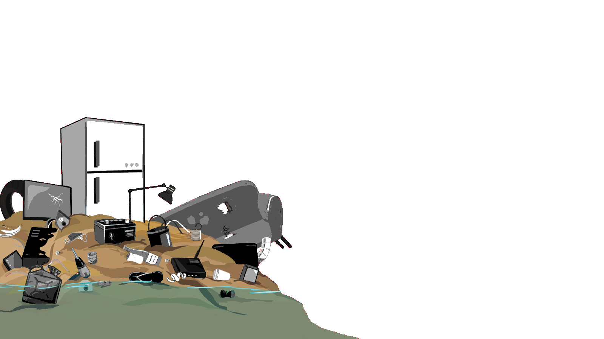
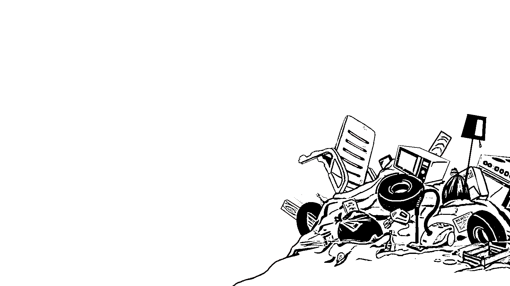
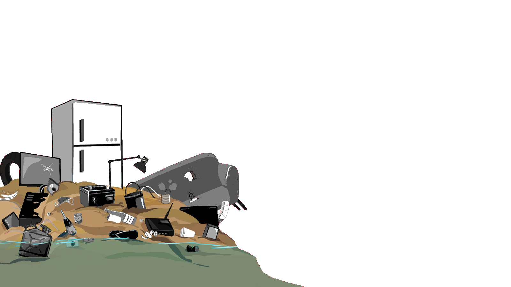
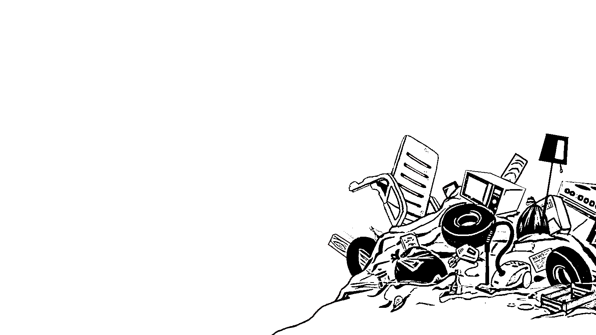

Lutter contre les déchetteries illégales en nature
Sea Shepherd enquête et informe les autorités et le grand public lorsque les lois permettant de protéger les océans ne sont pas respectées. Nous employons des stratégies innovantes d’action- directe pour exposer les activités illégales dans les sanctuaires marins et dans les eaux territoriales grâce à des accords de coopération avec les autorités locales.
Contre les menaces qui pèsent sur la santé de nos Océans
Nos Océans et leurs habitants meurent de la surpêche et de la destruction de leur habitat. Les braconniers pillent les sanctuaires marins en toute impunité. Et le public ne peut pas se rendre compte des méfaits occasionnés par la pêche illégale, non déclarée et non réglementée qui a lieu en pleine mer.
Sensibiliser et faire naître des vocations
Ne pas se substituer aux pouvoirs publics
Défendre et Protéger les Océans
La mission de Sea Shepherd est de lutter contre la destruction de la vie et de l’habitat marin dans son ensemble. Depuis 1977, nous utilisons des stratégies novatrices d’action directe pour défendre, conserver et protéger la biodiversité fragile de nos mers, océans, et faire respecter les lois internationales de conservation, trop souvent bafouées.